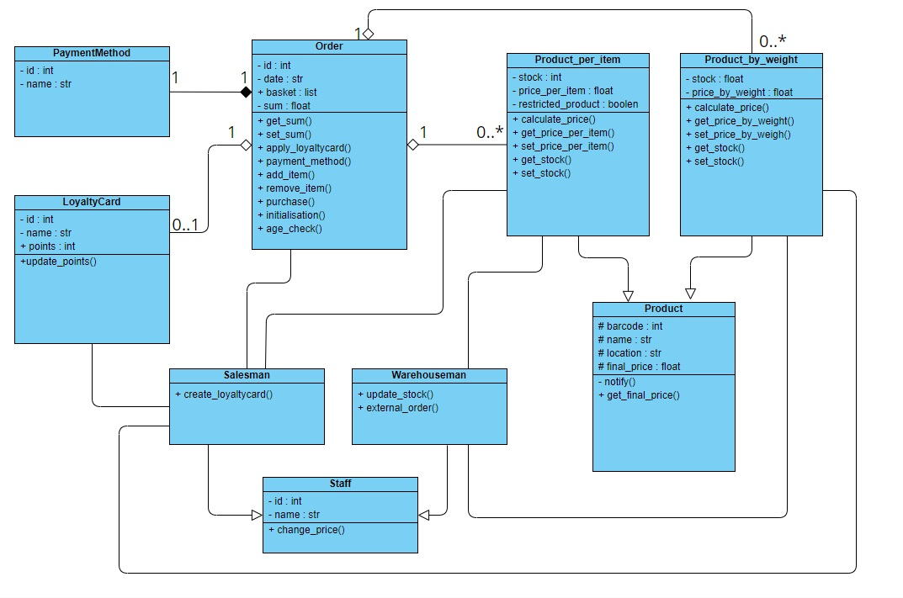

Assignments and self-evaluation
Description and self evaluation of assignments (Mid-module and System Implementation).

Description and self evaluation of assignments (Mid-module and System Implementation).
In my mid-of module assignment I did my best to create a system design for self- service checkouts, however I made a few mistakes that makes my proposal inefficient. These gaps in my implementation are as follow:
1) I did not provide multiplicities for all relationships, basically between Staff Class (and its subclasses) with Product Class (and its subclasses).
2) I have doubts if Staff should have subclasses. I reckon it was not necessary and I would remove Salesman subclass form my diagram.
3) Moreover, I think I misunderstood the idea of staff and warehouse. These two classes should be separated, because they have different tasks in this system design. The thing I confused in my proposal was creating classes for different type of employees who work in the supermarket (Warehouse subclass). I should have focused on proper implementation of actions and data management rather than finding correlations between real employees and potential classes that would represent them.
4) It was pointed me out that Order class is composed of two subclasses (Prodyct_by_item and Prodyct_by_weight) rather than of superclass Product. And this comment is justified, because it would simplify the diagram and it is rather obvious that if superclass Product is aggregated in Order then both of subclasses automatically have the same relationship.
I think I did a good job in creating proper methods that could be used to implement good software solution for making, editing and completing order with additional options like paying by different methods, collecting loyalty points or checking the age limit if prohibited products are purchased. Around Order Class I successfully described relationships and I applied encapsulation approach (with private and public variables) where it was necessary.

I personally think that in my system implementation I successfully applied object oriented programming to create a working script for booking appointments for a local surgery. The main features that should be underline are as follow:
a) I created all required classes with relationships that were shown on the class diagram.Improvements that might have been made:
a) I could have used Method Overwriting for the graphical representation of objects in HealthcareProfessional Class to simplify my code.Learning outcomes:
1) Firstly, I discovered that the class diagram was very useful to create the script. I had guidelines that I follow and a bright vision how the system should work.